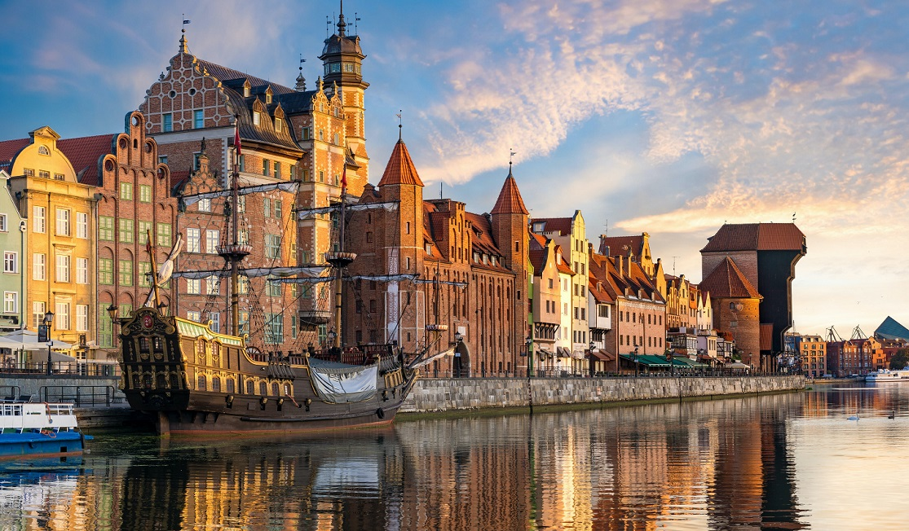

Descoperă Gdańsk - Orașul istoric și portuar din Polonia
Gdańsk este un oraș cu o istorie bogată și un port important din Polonia, cu atracții variate pentru vizitatori:
-

Centrul vechi pitoresc
Străzile pavate și clădirile colorate încântă privirile și oferă o atmosferă istorică unică.
-

Muzeul Chihlimbarului
Gdańsk este cunoscut pentru chihlimbar și muzeul său prezintă istoria și procesul de extracție a acestui material prețios.
-

Râul Motława și Cetatea Gdańsk
Cetatea medievală și portul oferă priveliști impresionante asupra râului Motława.
-

Monumentul Solidarității
Un omagiu adus mișcării Solidaritatea și luptei pentru drepturile muncitorilor, cu un muzeu dedicat.
-

Plaje frumoase
Orașul se bucură de plaje pe coasta Mării Baltice, perfecte pentru relaxare și distracție.
Concluzii
Gdańsk este o destinație fascinantă care îmbină istoria bogată cu viața portuară și frumusețea naturală.